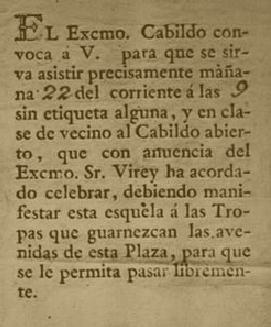

Cuadro
Invitación
El cuadro que constituye la génesis de este trabajo fue realizado en 1909 por el pintor chileno Pedro de Subercaseaux, a instancias de Adolfo P. Carranza, quien fundara en 1889 el Museo Histórico Nacional con el objeto de de evocar las tradiciones de la Revolución de Mayo y de la Guerra de la Independencia. La pintura de Subercaseaux es una pintura documentada, en donde Carranza fue el consejero y animador del artista, interviniendo en la adquisición de sus cuadros de carácter histórico para su exposición en el museo. Las conversaciones entre ambos y sus respectivas correspondencias constituyen fuentes de importancia para el análisis de esta obra. Sin embargo, no se conserva la correspondencia epistolar entre Carranza y Subercasseaux, lo que lleva a que toda interpretación sea producto de una reconstrucción posterior. Mayoritariamente, se cree que las ideas mentoras de este cuadro provienen de la visión del 22 de mayo de 1810 expresada por Vicente Fidel López en su Historia Argentina. La escena transcurre en el balcón exterior del Cabildo, sobre la actual calle Bolivar, en una de las galerías exteriores que formaban parte de los tres arcos del ala sur que fueron demolidas en agosto de 1931, para dar vista a la nueva diagonal Julio Argentino Roca. Podemos encontrar dos momentos bien definidos: el primero es el discurso de Juan José Paso. Los personajes aparecen como encantados por la elocuencia del futuro Secretario de la Primera Junta, evidenciando su atención dirigiéndole sus miradas, mientras que el resto parece meditar lo que está escuchando. El segundo momento, representado en el extremo inferior del óleo, presenta las dudas de Mariano Moreno. Si bien aparece como al margen de la escena, la posición de primer plano lo destaca. Es una instancia distinta al discurso de Paso. Se encuentra vacilante, preocupado por algo que parece no convencerlo, y es si la votación que ha dejado en el Cabildo la facultad de elegir un nuevo gobierno garantiza el éxito de la Revolución en curso. Hasta aquí, las intensiones de Carranza y Subercaseaux. Ahora, dejamos paso a la intuición de quien navegue por este cuadro, para que pueda hacer un poco propia la gesta del Cabildo Abierto de 1810. La idea es que se muevan libremente por el cuadro, investigando, descubriendo y participando de lo que tienen para contarnos estos personajes, ese telón y esos grupos, permitiendo que se crucen ideologías, personas, posiciones e ideas.